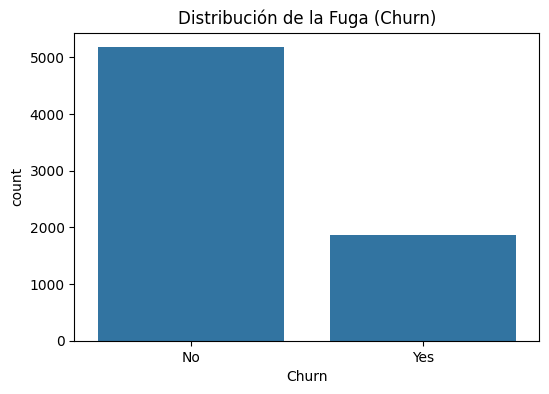
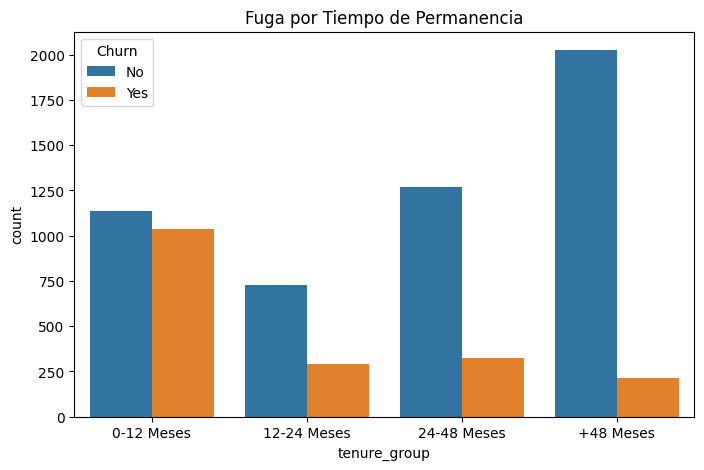

# Importamos las librerías necesarias
import pandas as pd
import numpy as np
import matplotlib.pyplot as plt
import seaborn as sns
from pathlib import PathEDA - Nivel 2
Nivel 2: Ingeniería y Preparación de Datos
En este nivel, subimos la dificultad. Ya no solo miramos los datos, sino que los preparamos para que un modelo de Machine Learning pueda entenderlos. Nos enfrentaremos a problemas del mundo real como datos sucios ocultos y variables que necesitan transformación.
Nos enfocaremos en las siguientes etapas:
- Detección de “Trampas”: Identificar columnas que parecen correctas pero tienen errores ocultos.
- Baseline Accuracy: Entender el desbalance de clases (¿qué pasa si mi modelo dice siempre “No”?).
- Feature Engineering: Crear nuevas variables (bins) para mejorar la predicción.
- Encoding: Traducir texto a números (One-Hot Encoding) para los algoritmos.
- Correlación: Medir matemáticamente la relación entre variables.
Para este ejemplo usaremos el dataset Telco Customer Churn, que contiene información sobre clientes de una empresa de telecomunicaciones y si cancelaron su servicio (Churn).
Fuente: Telco Customer Churn
1. CARGA DE DATOS
# Importamos el dataset
base_dir = Path.cwd()
csv_file_path = base_dir.parent.parent.parent / "data" / "telco_customer_churn" / "Telco-Customer-Churn.csv"
df = pd.read_csv(csv_file_path, low_memory=False)
# Mostramos la primera fila del DataFrame para verificar que se ha cargado correctamente
df.head(1)| customerID | gender | SeniorCitizen | Partner | Dependents | tenure | PhoneService | MultipleLines | InternetService | OnlineSecurity | ... | DeviceProtection | TechSupport | StreamingTV | StreamingMovies | Contract | PaperlessBilling | PaymentMethod | MonthlyCharges | TotalCharges | Churn | |
|---|---|---|---|---|---|---|---|---|---|---|---|---|---|---|---|---|---|---|---|---|---|
| 0 | 7590-VHVEG | Female | 0 | Yes | No | 1 | No | No phone service | DSL | No | ... | No | No | No | No | Month-to-month | Yes | Electronic check | 29.85 | 29.85 | No |
1 rows × 21 columns
2. LIMPIEZA DE TIPOS DE DATOS
Objetivo
Comprender el resultado de .info()
El Problema
A primera vista, todas las columnas parecen estar bien. Pero hay una “trampa” común en este dataset.
df.info()<class 'pandas.core.frame.DataFrame'>
RangeIndex: 7043 entries, 0 to 7042
Data columns (total 21 columns):
# Column Non-Null Count Dtype
--- ------ -------------- -----
0 customerID 7043 non-null object
1 gender 7043 non-null object
2 SeniorCitizen 7043 non-null int64
3 Partner 7043 non-null object
4 Dependents 7043 non-null object
5 tenure 7043 non-null int64
6 PhoneService 7043 non-null object
7 MultipleLines 7043 non-null object
8 InternetService 7043 non-null object
9 OnlineSecurity 7043 non-null object
10 OnlineBackup 7043 non-null object
11 DeviceProtection 7043 non-null object
12 TechSupport 7043 non-null object
13 StreamingTV 7043 non-null object
14 StreamingMovies 7043 non-null object
15 Contract 7043 non-null object
16 PaperlessBilling 7043 non-null object
17 PaymentMethod 7043 non-null object
18 MonthlyCharges 7043 non-null float64
19 TotalCharges 7043 non-null object
20 Churn 7043 non-null object
dtypes: float64(1), int64(2), object(18)
memory usage: 1.1+ MBObservación: Fíjate en la columna
TotalCharges. Aparece comoobject(texto), pero debería ser numérica (float). Esto sucede porque contiene espacios vacíos" "que pandas interpreta como texto.
# Forzamos la conversión a numérico. 'coerce' convierte los errores (espacios) en NaN
df['TotalCharges'] = pd.to_numeric(df['TotalCharges'], errors='coerce')
# Verificamos cuántos nulos se generaron
print(f"Valores nulos en TotalCharges: {df['TotalCharges'].isnull().sum()}")
# Imputamos los nulos con la mediana (es más robusta a outliers que la media)
df['TotalCharges'] = df['TotalCharges'].fillna(df['TotalCharges'].median())Valores nulos en TotalCharges: 113. ANÁLISIS DEL DESBALANCE DE CLASES
Objetivo
Entender que en la vida real, los casos positivos (ej. fraude, fuga) suelen ser la minoría.
Baseline Accuracy
Si asumimos que nadie se va (predicimos siempre “No Churn”), ¿qué tan precisos seríamos?
plt.figure(figsize=(6, 4))
sns.countplot(x='Churn', data=df)
plt.title('Distribución de la Fuga (Churn)')
plt.show()
# Calculamos el porcentaje exacto
print(df['Churn'].value_counts(normalize=True) * 100)
Churn
No 73.463013
Yes 26.536987
Name: proportion, dtype: float64Análisis:
- Vemos que aproximadamente el 73% de los clientes NO se van (Clase Mayoritaria).
- ¿Qué significa este 73%? Es nuestro Baseline Accuracy (Línea Base).
- Imagina un “modelo dummy” que simplemente adivina que ningún cliente se irá. Este modelo acertaría el 73% de las veces sin saber nada.
- Por lo tanto, cualquier modelo de Machine Learning que construyamos debe tener una precisión SUPERIOR al 73% para que valga la pena. Si nuestro modelo tiene 70% de accuracy, es peor que no hacer nada.
4. ANÁLISIS BIVARIADO CATEGÓRICO (INSIGHTS DE NEGOCIO)
Objetivo
Ver cómo las categorías afectan la fuga. Responderemos preguntas de negocio clave.
fig, axes = plt.subplots(1, 2, figsize=(14, 5))
# Contrato vs Churn
sns.countplot(x='Contract', hue='Churn', data=df, ax=axes[0])
axes[0].set_title('Fuga por Tipo de Contrato')
# Servicio de Internet vs Churn
sns.countplot(x='InternetService', hue='Churn', data=df, ax=axes[1])
axes[1].set_title('Fuga por Tipo de Internet')
plt.tight_layout()
plt.show()
Insights:
- Contrato: Los clientes con contrato “Month-to-month” tienen una tasa de fuga altísima comparada con los de “Two year”.
- Internet: Los usuarios de “Fiber optic” tienden a irse más que los de “DSL”. Esto podría indicar problemas de calidad o precio en el servicio de fibra.
5. FEATURE ENGINEERING (CREACIÓN DE VARIABLES)
Objetivo
Crear nueva información a partir de la existente para ayudar al modelo.
Binning (Agrupación)
La variable tenure (meses de permanencia) es numérica. A veces el comportamiento de los clientes se entiende mejor por grupos (Nuevos vs Leales).
# Definimos los rangos (bins) y las etiquetas
bins = [0, 12, 24, 48, 100]
labels = ['0-12 Meses', '12-24 Meses', '24-48 Meses', '+48 Meses']
# Creamos la nueva columna
df['tenure_group'] = pd.cut(df['tenure'], bins=bins, labels=labels)
# Visualizamos la fuga por grupo de permanencia
plt.figure(figsize=(8, 5))
sns.countplot(x='tenure_group', hue='Churn', data=df)
plt.title('Fuga por Tiempo de Permanencia')
plt.show()
6. CODIFICACIÓN DE VARIABLES (ENCODING)
Objetivo
Transformar texto a números, ya que los modelos de ML no entienden “Yes”, “No”, “Male”, “Female”.
Estrategia
- Binarios (2 opciones): Mapeo directo a 0 y 1.
- Nominales (>2 opciones): One-Hot Encoding (crear columnas dummy).
# 1. Variables Binarias Manuales
# Primero verificamos que no haya nulos en estas columnas
binary_cols = ['gender', 'Partner', 'Dependents', 'PhoneService', 'PaperlessBilling', 'Churn']
for col in binary_cols:
print(f"Valores únicos en {col}: {df[col].unique()}")
df['gender'] = df['gender'].map({'Male': 1, 'Female': 0})
df['Partner'] = df['Partner'].map({'Yes': 1, 'No': 0})
df['Dependents'] = df['Dependents'].map({'Yes': 1, 'No': 0})
df['PhoneService'] = df['PhoneService'].map({'Yes': 1, 'No': 0})
df['PaperlessBilling'] = df['PaperlessBilling'].map({'Yes': 1, 'No': 0})
df['Churn'] = df['Churn'].map({'Yes': 1, 'No': 0})Valores únicos en gender: ['Female' 'Male']
Valores únicos en Partner: ['Yes' 'No']
Valores únicos en Dependents: ['No' 'Yes']
Valores únicos en PhoneService: ['No' 'Yes']
Valores únicos en PaperlessBilling: ['Yes' 'No']
Valores únicos en Churn: ['No' 'Yes']¿Qué es One-Hot Encoding?
Para variables con más de 2 opciones (como InternetService: DSL, Fiber optic, No), no podemos simplemente asignarles números 1, 2, 3. ¿Por qué? Porque el modelo pensaría que 3 es “mayor” que 1, y eso no es cierto (la fibra óptica no es “mayor” que el DSL, es solo diferente).
Solución: Creamos una nueva columna para cada opción posible.
InternetService_DSL(1 si es DSL, 0 si no)InternetService_Fiber optic(1 si es Fibra, 0 si no) … y así sucesivamente.
# 2. One-Hot Encoding para el resto
# Seleccionamos las columnas categóricas restantes (excluyendo las que ya convertimos o no sirven como customerID)
cat_cols = ['MultipleLines', 'InternetService', 'OnlineSecurity', 'OnlineBackup',
'DeviceProtection', 'TechSupport', 'StreamingTV', 'StreamingMovies',
'Contract', 'PaymentMethod', 'tenure_group']
# pd.get_dummies crea las nuevas columnas (drop_first=True evita la multicolinealidad)
df_encoded = pd.get_dummies(df, columns=cat_cols, drop_first=True)
# Eliminamos customerID que no aporta valor predictivo
if 'customerID' in df_encoded.columns:
df_encoded.drop(columns=['customerID'], inplace=True)
print(f"Dimensiones originales: {df.shape}")
print(f"Dimensiones después del Encoding: {df_encoded.shape}")
df_encoded.head(3)Dimensiones originales: (7043, 22)
Dimensiones después del Encoding: (7043, 34)| gender | SeniorCitizen | Partner | Dependents | tenure | PhoneService | PaperlessBilling | MonthlyCharges | TotalCharges | Churn | ... | StreamingMovies_No internet service | StreamingMovies_Yes | Contract_One year | Contract_Two year | PaymentMethod_Credit card (automatic) | PaymentMethod_Electronic check | PaymentMethod_Mailed check | tenure_group_12-24 Meses | tenure_group_24-48 Meses | tenure_group_+48 Meses | |
|---|---|---|---|---|---|---|---|---|---|---|---|---|---|---|---|---|---|---|---|---|---|
| 0 | 0 | 0 | 1 | 0 | 1 | 0 | 1 | 29.85 | 29.85 | 0 | ... | False | False | False | False | False | True | False | False | False | False |
| 1 | 1 | 0 | 0 | 0 | 34 | 1 | 0 | 56.95 | 1889.50 | 0 | ... | False | False | True | False | False | False | True | False | True | False |
| 2 | 1 | 0 | 0 | 0 | 2 | 1 | 1 | 53.85 | 108.15 | 1 | ... | False | False | False | False | False | False | True | False | False | False |
3 rows × 34 columns
# Verificamos los tipos de datos resultantes
df_encoded.dtypes.value_counts()bool 24
int64 8
float64 2
Name: count, dtype: int64# Luego del procesamiento tenemos valores boolean que para efectos prácticos
# pueden ser tratados como enteros 0/1 por el proceso de entrenamiento.
# Sin embargo es mejor convertirlos explícitamente a int para evitar problemas de tipo de datos en el modelo.
# Seleccionamos todas las columnas bool
bool_cols = df_encoded.select_dtypes(include="bool").columns
# Convertimos a int (0/1)
df_encoded[bool_cols] = df_encoded[bool_cols].astype(int)
# Visualizamos nuevamente los tipos de datos
df_encoded.dtypes.value_counts()int64 32
float64 2
Name: count, dtype: int647. MATRIZ DE CORRELACIÓN
Objetivo
Ver relaciones matemáticas ahora que todo es numérico.
plt.figure(figsize=(12, 8))
# Calculamos la correlación con la variable objetivo 'Churn'
corr_churn = df_encoded.corr()['Churn'].sort_values(ascending=False)
# Mostramos las 10 variables más correlacionadas positivamente y las 5 más negativas
print("Top Correlaciones Positivas:\n", corr_churn.head(10))
print("\nTop Correlaciones Negativas:\n", corr_churn.tail(5))
# Heatmap de las variables más importantes (opcional, para no saturar el gráfico)
top_cols = corr_churn.index[:15] # Las 15 más altas
sns.heatmap(df_encoded[top_cols].corr(), annot=True, fmt=".2f", cmap='coolwarm')
plt.show()Top Correlaciones Positivas:
Churn 1.000000
InternetService_Fiber optic 0.308020
PaymentMethod_Electronic check 0.301919
MonthlyCharges 0.193356
PaperlessBilling 0.191825
SeniorCitizen 0.150889
StreamingTV_Yes 0.063228
StreamingMovies_Yes 0.061382
MultipleLines_Yes 0.040102
tenure_group_12-24 Meses 0.020308
Name: Churn, dtype: float64
Top Correlaciones Negativas:
TechSupport_No internet service -0.227890
StreamingTV_No internet service -0.227890
tenure_group_+48 Meses -0.263222
Contract_Two year -0.302253
tenure -0.352229
Name: Churn, dtype: float64
8. CONCLUSIONES Y SIGUIENTES PASOS
Resumen
- Limpieza: Descubrimos que
TotalChargestenía espacios vacíos y los corregimos. - Insights:
- Los contratos mensuales y la fibra óptica son factores de riesgo de fuga.
- Los clientes nuevos (0-12 meses) son los más propensos a irse.
- Preparación: Hemos convertido todo a números. El dataset pasó de ~20 columnas a más de 30 debido al One-Hot Encoding.
Reflexión para Nivel 3
El One-Hot Encoding es útil, pero… ¿qué pasaría si tuviéramos una columna como “Código Postal” con 500 categorías? Nuestro dataset crecería enormemente (High Cardinality).